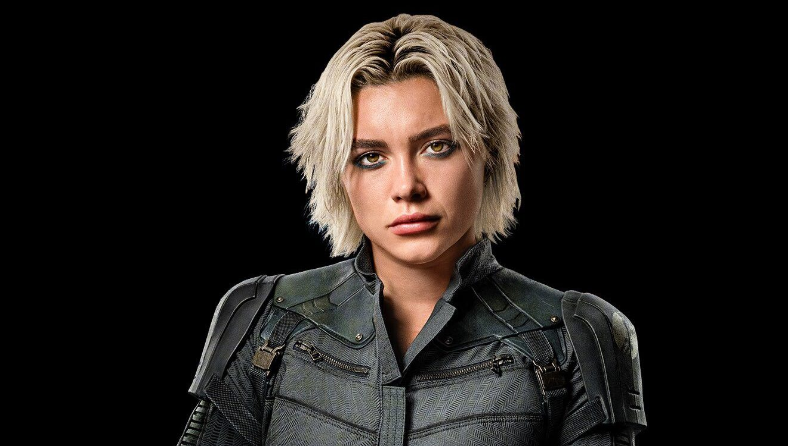

Yelena Belova / Viúva Negra
Interpretada por: Florence Pugh
Yelena Belova é uma assassina treinada no programa da Sala Vermelha e irmã adotiva de Natasha Romanoff. Após os eventos de Black Widow, ela busca redenção e um novo propósito. Em Thunderbolts, Yelena assume a liderança da equipe, utilizando suas habilidades excepcionais em combate e sua determinação para guiar os membros em uma missão perigosa. Sua jornada é marcada por conflitos internos e o desejo de honrar o legado de sua irmã.